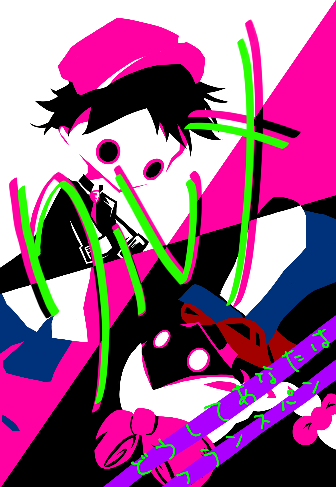

About
自己紹介
-
研究内容
私の研究テーマは、陽子の拡散力が高い金属材料を機械学習で探索・発見し、高品質で安価な水素電池を作ることです。本研究の課題は、1つの材料を作るのに1か月以上の時間がかかるため、少ない試行回数で良い材料の発見が求められている点と材料の作成に時間とコストがかかるため、データが少ない点です。学習データが非常に少ないという特殊な環境で機械学習を活かし、効率を最大限高めることを目標とし、日々研究に取り組んでいます。
-
好きなこと
ポーカー / ボードゲーム
Timeline
歩み
九州大学入学（化学や金属について学ぶ）
機械学習に出会い、120人エントリーのコンペティション（aihack）でソロ4位を獲得。
機械学習を活用して金属材料を探索する山崎研究室に配属
signate SMBC Group GREEN×DATA Challenge 2025 for Recruiting にて、23位/ 1071人を獲得（学生9位）
九州大学院院試に集中+合格
gci summer 2025 修了
Skills
スキルセット
設計から開発、改善までのフローを意識した構成になっています。実績紹介と合わせて読みやすく整理しました。
-
ほぼ毎日読み書きしている
Python
（scikit-learn,NumPy,pandasなど。Pytorchは学習中） -
よく個人開発で使っている
Git/GitHub
OpenAI API -
一度、バイブコーディングを通じて、個人開発等で使ったことがある
render / Docker / Flask / django
-
簡単なプログラムであれば読むことができる言語
java / javascript / c / HTML / css
Books
読んだ本
- 「Kaggleで勝つデータ分析の技術」
- 「The Kaggle Book:データ分析競技実践ガイド&精鋭31人インタビュー」
Activity
活動
-
 同人ボードゲーム
ボードゲーム制作の中心人物となり、企画・設計・販売をしました。3人の少人数チームでしたが、メンバーへのタスクの割り振り・マネジメント等を学び、現地でお客様相手に、スライドを使ってゲームの説明を行い、営業・販売する貴重な経験を得ました。
Contact
お問い合わせ
プロジェクトのご相談やお仕事のご依頼など、お気軽にご連絡ください。GitHub Pages上でも動作するシンプルな問い合わせ導線です。
下記のメールアドレス、またはSNSからご連絡ください。
- Mail hello@example.com
- GitHub github.com/your-account
- Twitter @your-account